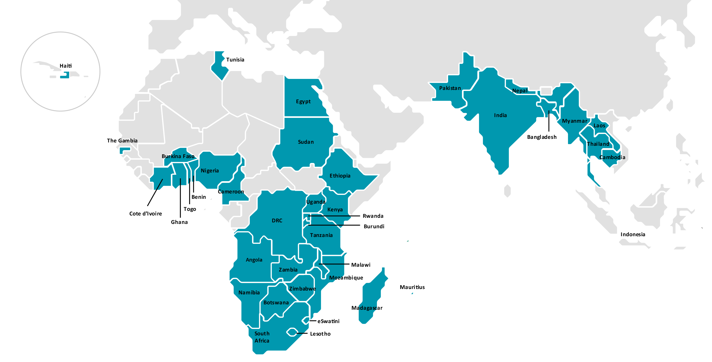

Data and analytics
We create and analyse financial services demand-side data to deepen understanding of served and unserved consumers across developing markets.
Explore our dataAbout FinMark Trust
We are an independent non-profit trust working to make financial markets work for people living in poverty.
Our purpose
FinMark Trust promotes financial inclusion and regional financial integration so that financial markets serve people who are currently excluded or underserved.
Our mission extends beyond access to financial services. We focus on economic inclusion and on building financial sectors that create meaningful value for individuals, micro, small and medium enterprises, and small-scale farmers.
Making financial markets work for people in poverty.
How we work
Rigorous demand-side evidence and financial sector development reinforce one another—turning insight into practical market change.
We create and analyse financial services demand-side data to deepen understanding of served and unserved consumers across developing markets.
Explore our dataWe address regulatory, supplier and market-level barriers that limit the effective provision and use of financial services.
Explore our programmesStrategic direction
Every FinMark Trust project contributes to at least one strategic priority and may advance several priorities at once.
Our footprint
Our programme work is centred in the Southern African Development Community, whilst our data and evidence contribute to a wider global agenda.

Our people
Meet the people who drive our work and promote the values of FinMark Trust.

Chief Executive Officer
Brendan oversees FinMark Trust’s strategic direction and operations. His leadership experience spans development services, sector education and training, agricultural finance, and international legal and regulatory affairs.

Chief Operations Officer
Grant is an executive member of FinMark Trust with more than 25 years’ experience across research, data, finance and operations. He holds a master’s degree in research psychology.

Head: South Africa FI Programme
Lesego leads FinMark Trust’s South African financial inclusion programme, directing initiatives that deepen inclusion, strengthen economic participation and support sustainable livelihoods.

Head: SADC FI
Damola leads regional work on cross-border trade, remittances, financial integrity and financial inclusion monitoring. He brings more than a decade of sector experience and holds a master’s degree in econometrics.

Executive: Data and Analytics
Kingstone leads the organisation’s research activities, including FinScope surveys and other data offerings across Africa and beyond. His research career spans large-scale analytics, research design and statistical modelling.

Head: Knowledge Management
Shirley oversees knowledge sharing, communications, interactive platforms, and monitoring and results measurement. She is committed to evidence-based development and effective collaboration.

Senior Data and Analytics Specialist
Jabulani has more than 20 years’ research experience and supports the design and implementation of FinScope surveys, providing technical assistance across the SADC region.

Senior Data and Analytics Specialist
Abel is a Chartered Statistician who uses data and statistical evidence to inform policy and advance financial inclusion, with a focus on outcomes, resilience and financial wellbeing.

National Programme Manager Consultant
Lungisani manages the Generating Better Livelihoods for Grant Recipients project. His experience includes public employment programmes, sustainable livelihoods, poverty alleviation and community development.

Senior Analytics Specialist
Bobby has extensive experience in survey management and data analytics. He develops analytical tools that financial inclusion practitioners can adapt and apply in their own markets.

Data and Analytics Specialist
Tabitha supports FinScope studies through stakeholder engagement, survey design, data cleaning, analysis and report writing. Her research interests include development finance and economic growth.

National Business Development Manager Consultant
Matsiedi identifies business and partnership opportunities for the Generating Better Livelihoods programme, drawing on experience in enterprise, skills and community development.

Senior SADC Financial Inclusion Specialist
Obert has more than 12 years’ experience in financial inclusion and MSME research. His work includes the development of MSME360, a diagnostic tool applied in Eswatini and Malawi.

Interactive Manager
Michael develops user-friendly digital products and visual experiences that make large datasets useful to decision-makers. He has more than 20 years’ experience with web-based products.

Specialist in Programme Development and Implementation
Phumelele leads a pilot that supports child support grant recipients through training, skills development, job creation, entrepreneurship and social empowerment.

SADC FI Specialist: Innovation Programmes
Nicola manages innovation and technical assistance projects across the SADC region, with expertise in project management, data analytics, econometric modelling and applied research.

Implementation Coordinator Consultant
Vuyi oversees implementation of the GBL project across seven pilot sites in Gauteng, Free State and KwaZulu-Natal, bringing senior leadership and stakeholder management experience.

Writer and Digital Communications Specialist
Dionne develops written reports and digital content for FinMark Trust. Her communications experience spans strategy, reputation management, public relations and content marketing.

Project Administrator: SADC FI
Phathutshedzo coordinates schedules, budgets, resources and stakeholder relationships for the SADC financial inclusion programme. She holds an honours degree in economics.

Programmes Project Manager
Robert coordinates projects across the programmes portfolio, covering project design, implementation, monitoring and reporting across regional and thematic initiatives.

Financial Inclusion Specialist
Karabo leads the community digitalisation project, supporting inclusive digital payment ecosystems in low-income South African communities.

Junior FI Specialist: South Africa FI Programme
Akhona conceptualises and implements financial inclusion programmes in South Africa. Her background includes research and programme implementation in rural communities.

Junior MEL Specialist
Tessa works in monitoring, evaluation and learning, with a focus on marginalised communities, youth empowerment and meaningful social transformation.

Financial Inclusion Intern
Nqobile is a community development practitioner with experience advocating for diversity, equity and inclusion across a range of underserved groups.

Project Admin Intern
Lesego supports programme administration and coordination, including implementation tracking, financial compliance and stakeholder engagement.

Contracts and Account Manager
Marlene provides project management, financial and human resources support, managing contracts, funder relationships and project delivery across the organisation.

Accounting Manager
Helen delivers financial management, budgeting, analysis and reporting to support transparent decision-making and maintain FinMark Trust’s financial integrity.

Finance Officer
Kholiswa supports the finance team in delivering integrated financial services, applying value-for-money principles and established organisational policies.

Data Analyst
Pearl supports FinScope survey design, data management, analysis and reporting, using economic research and data to help drive informed decisions.

Junior FI Specialist
Tumelo is an agricultural economist focused on economic research, food security, industry transformation and inclusion for women-, youth- and black-owned agricultural MSMEs.

Office Assistant
Charity provides essential support that keeps the organisation running smoothly. Her community work includes initiatives supporting women, girls and older people.

Eswatini Country Coordinator
Sabelo brings more than 25 years’ finance-sector experience to financial inclusion work in Eswatini, including banking supervision, investment facilitation and project appraisal.

Lesotho Country Coordinator
Florence brings more than 24 years’ public-sector development experience, including 15 years advancing financial inclusion and financial-sector development in Lesotho.

Malawi Country Coordinator
McEwen leads FinMark Trust’s Malawi country programme. His experience spans central banking, financial-sector development and digital finance across Africa and the Pacific.

Zimbabwe Country Coordinator
Blessing coordinates financial inclusion initiatives in Zimbabwe, combining project implementation, stakeholder engagement and quantitative and qualitative analysis.

Lesotho Country Coordinator
Palesa has coordinated financial inclusion programmes in Lesotho since 2012, building strong relationships with government, the central bank and development partners.
Governance
Independent oversight and stewardship support FinMark Trust’s mission and long-term impact.

Chair
Cas Coovadia is the Chairman of FinMark Trust. He was the Managing Director of the Banking Association South Africa and is currently the CEO at Business Unity South Africa (BUSA), He is a board member at National Business Initiative, African Union for Housing Finance and the University of Witwatersrand.

Trustee
Ishmael Mkhabela has vast experience in community organising, corporate governance, housing policy formulation and implementation, community and city regeneration, fields that require stakeholder engagement, awareness raising, advocacy, disputes resolution, mediation and facilitation processes. He is the Chairperson of Steve Biko Foundation and Johannesburg Inner City Partnership as well as Deputy President of the South African Institute of Race Relations. He also serves as a board member of the Nelson Mandela Children’s Hospital Trust, Centre for Development Enterprise, Mbhetsa Academy, and Donaldson Trust.

Trustee
Ethel Matenge-Sebesho is an experienced banker and financial services expert and has served on the board of FirstRand Limited. She continues to serve on the board of some subsidiaries of FirstRand Limited and Distell Group Limited. Until the end of 2017, Ethel was involved with establishing new markets for Home Finance Guarantors Africa Reinsurance in a number of African countries.

Trustee
Vimbai Tsopotsa has considerable experience in the financial industry in South Africa and Zimbabwe, mainly in banking and ICT. She is a Trustee of FinMark Trust. She is also an executive director of Amaciko Film Investments (Pty) Ltd. She also serves as director of Aigle Finance and was formerly managing director of Venture Communications SA.

Trustee
Lumkile Mondi is a senior lecturer at the School of Economic and Business Sciences of the University of the Witwatersrand in Johannesburg. He is a Trustee of FinMark Trust. He worked extensively in the African continent during his tenure at the Industrial Development Corporation (IDC) as an executive for eleven years and is a director of Gemfields Group Limited and Thelo Rolling Stock Leasing.
Work with us
Get in touch to explore how we can work together to advance financial and economic inclusion.